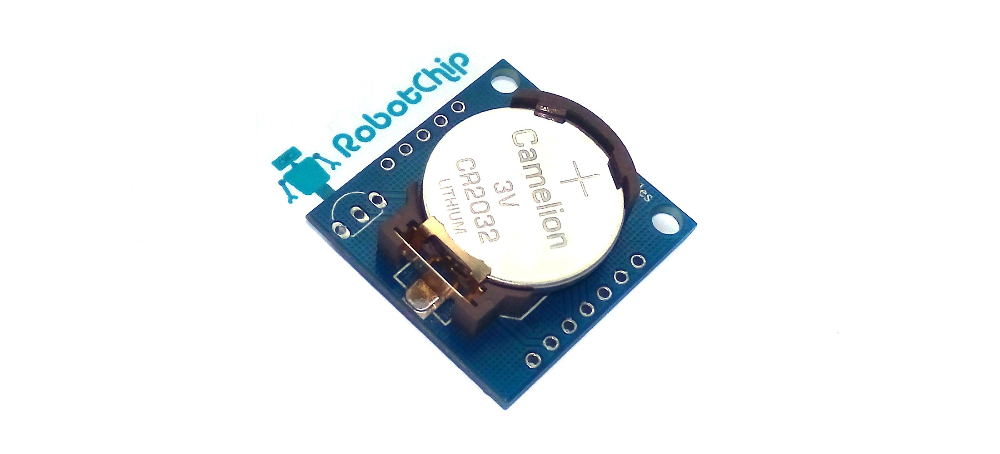
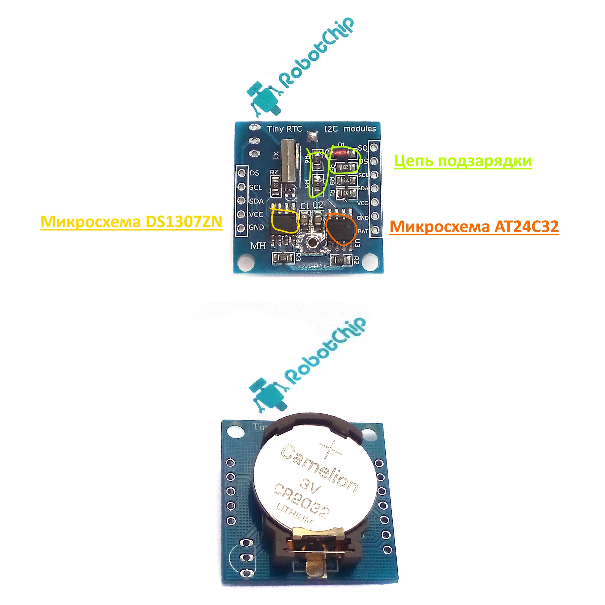
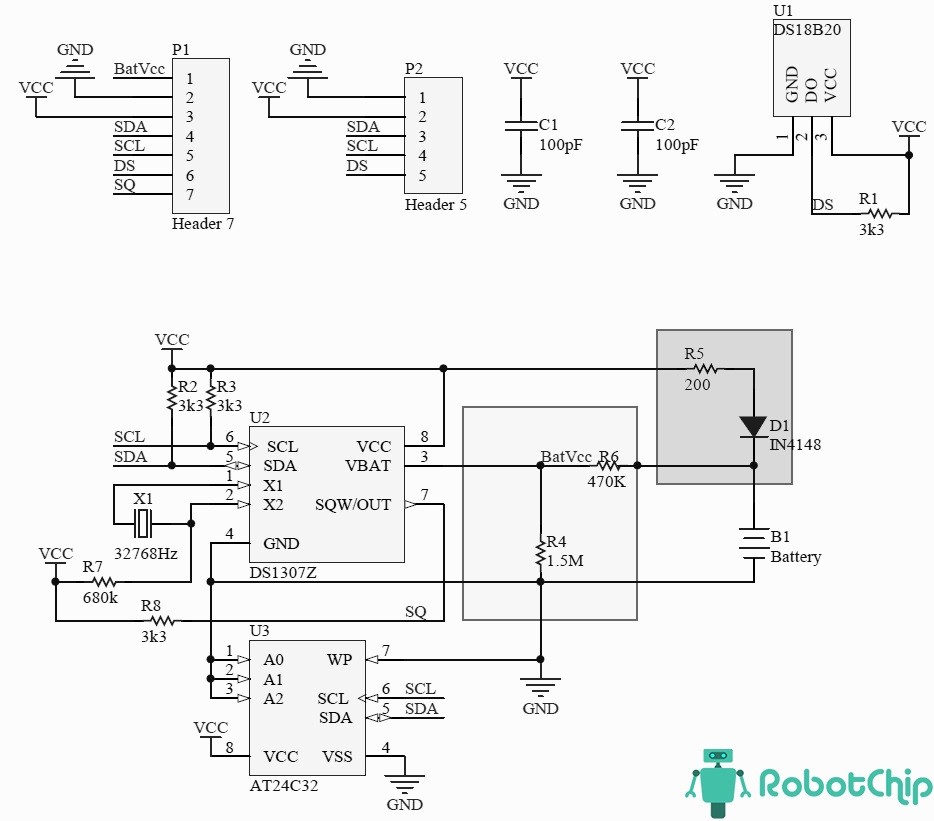
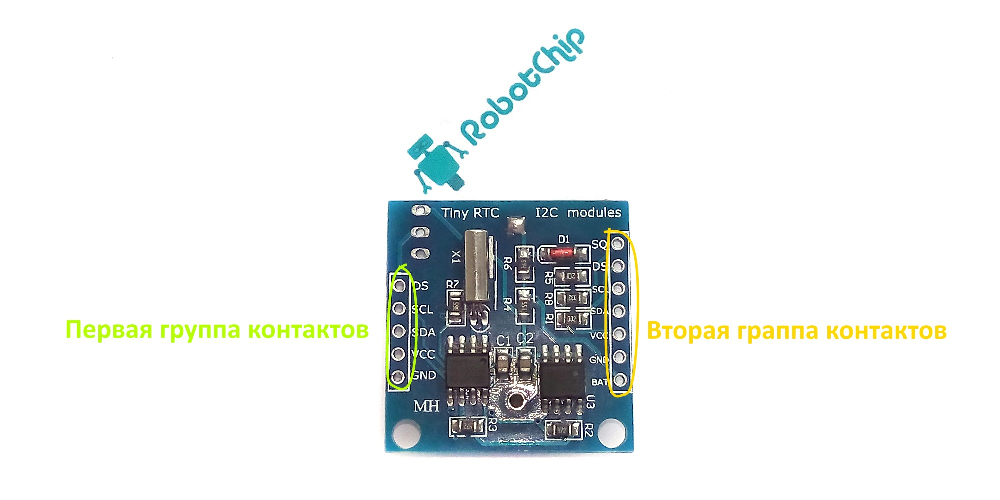
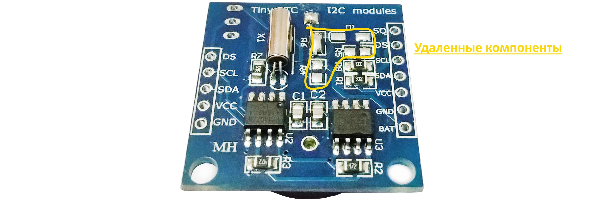
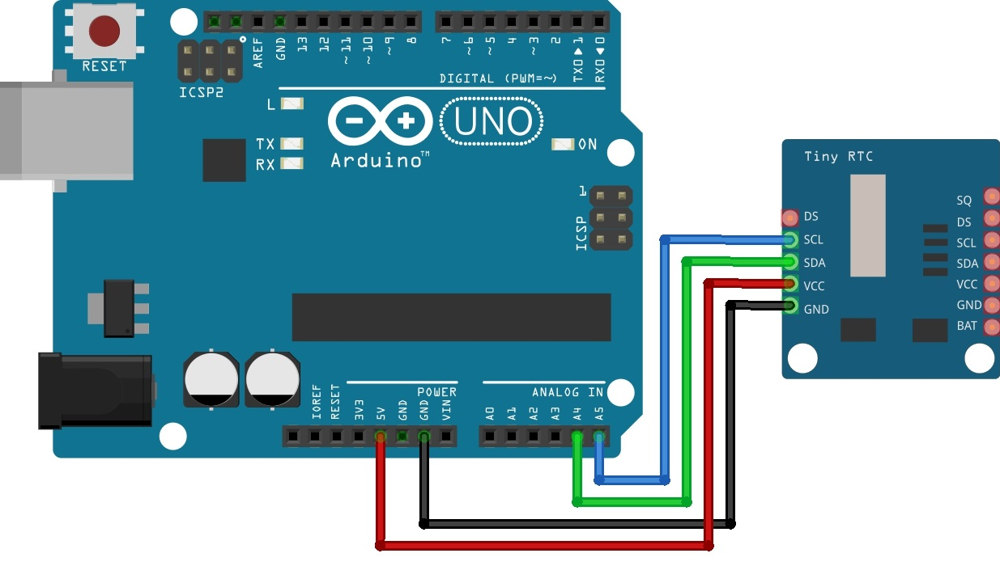

Последовательные часы реального времени (RTC) DS1307 представляют собой маломощные часы с полными двоичными кодами (BCD) и календарь плюс 56 байтов NV SRAM. Адрес и данные передаются последовательно через двунаправленную шину I2C.
Часы / календарь предоставляют информацию о секундах, минутах, часах, дне, дате, месяце и году. Дата конца месяца автоматически корректируется для месяцев с количеством дней менее 31, включая поправки для високосного года. Часы работают в 24-часовом или 12-часовом формате с индикатором AM / PM. DS1307 имеет встроенную схему питания, которая обнаруживает сбои питания и автоматически переключается на резервный источник питания.
Операция хронометража продолжается, пока деталь работает от резервного источника
ПРЕИМУЩЕСТВА И ОСОБЕННОСТИ
Обзор часов реального времени DS1307 (RTC)
https://robotchip.ru/obzor-chasov-realnogo-vremeni-ds1307/
АВТОР: СЕРГЕЙ · ОПУБЛИКОВАНО 24.11.2016 · ОБНОВЛЕНО 13.04.2020
DS1307 это небольшой модуль, предназначенный для подсчета времени. Собранный на базе микросхемы DS1307ZN с реализацией питания от литиевой батарейки (LIR2032), что позволяет работать автономно в течение длительного времени. Также на модуле, установлена энергонезависимая память EEPROM объемом 32 Кбайт (AT24C32). Микросхема AT24C32 и DS1307ZN связаны обшей шиной интерфейсом I2C.

Технические параметры
► Напряжение питания: 5В
► Рабочая температура: – 40℃ … + 85℃
► Память: 56 байт (энергонезависимая)
► Батарейка: LIR2032 (автоматическое определение источника питания)
► Интерфейса: I2C
► Габариты: 28мм х 25мм х 8 мм
Общие сведения
Использовании модуля DS1307 зачастую очень оправдано, например, когда данные считываются редко, интервалом более недели, использовать собственные ресурсы контроллера, неоправданно или невозможно. Обеспечивание бесперебойное питание, например платы Arduino, на длительный срок дорого, даже при использовании батареи.
Благодаря собственной памяти и автономностью, можно регистрировать события, (при автономном питании) например изменение температуры и так далее, данные сохраняются в памяти их можно считать из памяти модуля. Так что модуль DS1307 часто используют, когда контроллерам Arduino необходимо знать точное время, для запуска какого то события и так далее.

Обмен данными с другими устройствами осуществляется по интерфейсу I2C с выводов SCL и SDA. Конденсаторы С1 и С2 необходимы для снижения помех по линию питания. Чтобы обеспечить надлежащего уровня сигналов SCL и SDA установлены резисторы R2 и R3 (подтянуты к питанию). Для проверки работоспособности модуля, на вывод 7 микросхему DS1307Z, подается сигнал SQ, прямоугольной формы с частотой 1 Гц. Элементы R4, R5, R6, VD1 необходимы для подзарядку литиевой батарейки. Так же, на плате предусмотрено посадочное место (U1), для установки датчика температуры DS18B20 (при необходимости можно впаять его), считывать показания, можно с вывода DS, который подтянут к пиатнию, через резистор R1 сопротивлением 3.3 кОм. Принципиальную схему и назначение контактов можно посмотреть на рисунках ниже.

На плате расположено две группы контактов, шагом 2.54 мм, для удобного подключения к макетной плате, буду использовать штырьевые разъемы, их необходимо впаять.

Первая группа контактов:
► DS: вывод DS18B20 (1-wire)
► SCL: линия тактирования (Serial CLock)
► SDA: линия данных (Serial Dфta)
► VCC: «+» питание модуля
► GND: «-» питание модуля
Вторая группа контактов:
► SQ: вход 1 МГц
► DS: вывод DS18B20 (1-wire)
► SCL: линия тактирования (Serial CLock)
► SDA: линия данных (Serial Dфta)
► VCC: «+» питание модуля
► GND:«-» питание модуля
► BAT:
Подзарядка батареи
Как описывал ваше модуль может заряжать батарею, реализовано это, с помощью компонентов R4, R5, R6 и диода D1. Но, данная схема имеет недостаток, через резистор R4 и R6 происходит разряд батареи (как подметил пользователь ALEXEY, совсем не большой). Так как модуль потребляем незначительный ток, можно удалить цепь питания, для этого убираем R4, R5, R6 и VD1, вместо R6 поставим перемычку (после удаления компонентов, можно использовать обычную батарейку CR2032).

Подключение DS1307 к Arduino
Необходимые детали:
► Arduino UNO R3 x 1 шт.
► Провод DuPont, 2,54 мм, 20 см x 1 шт.
► Кабель USB 2.0 A-B x 1 шт.
► Часы реального времени RTC DS1307 x 1 шт.
Подключение:
Для подключения часы реального времени DS1307, необходимо впаять впаять штыревые разъемы в первую группу контактов. Далее, подключаем провода SCL (DS1307) к выводу 4 (Arduino UNO) и SDA (DS1307) к выводу 5 (Arduino UNO), осталось подключить питания VCC к +5V и GND к GND. Кстати, в различных платах Arduino вывода интерфейса I2C отличаются, назначение каждого можно посмотреть ниже.

Установка времени DS1307
Первым делом, необходимо скачать и установить библиотеку «DS1307RTC» и «TimeLib» в среду разработки IDE Arduino, далее необходимо настроить время, открываем пример из библиотеки DS1307RTC «Файл» —> «Примеры» —> «DS1307RTC» —> «SetTime» или копируем код снизу.